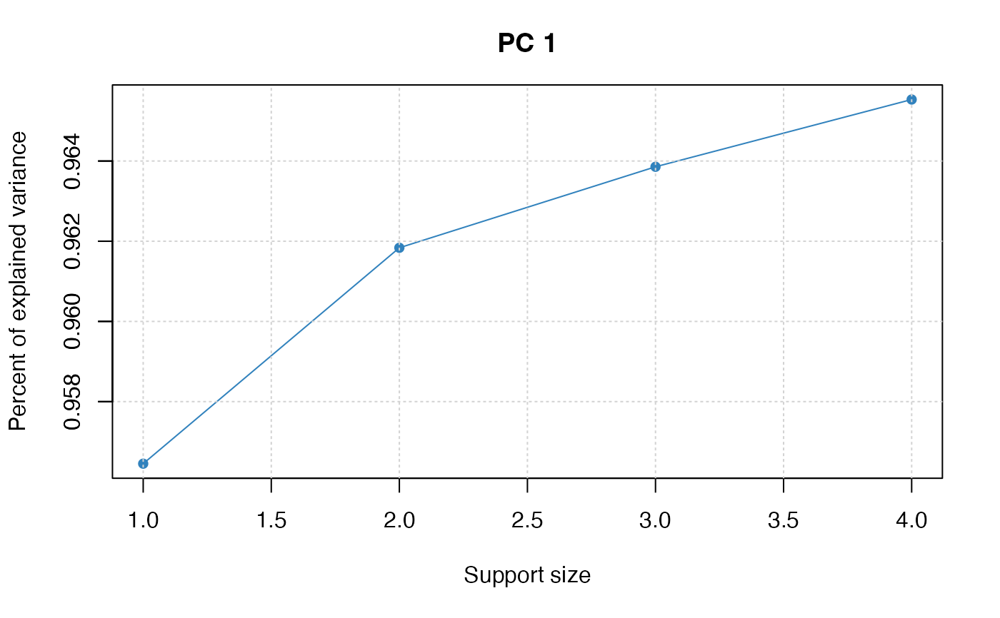
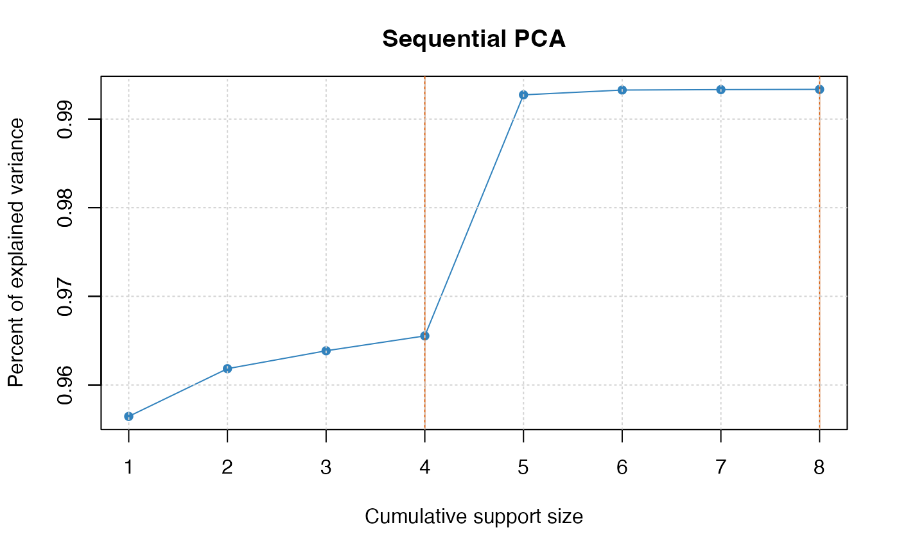
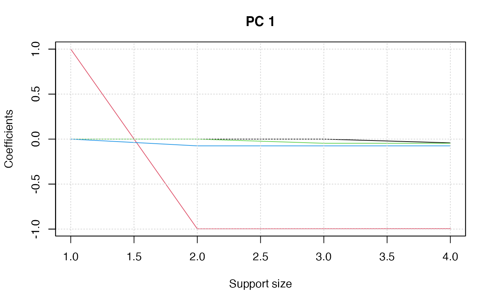
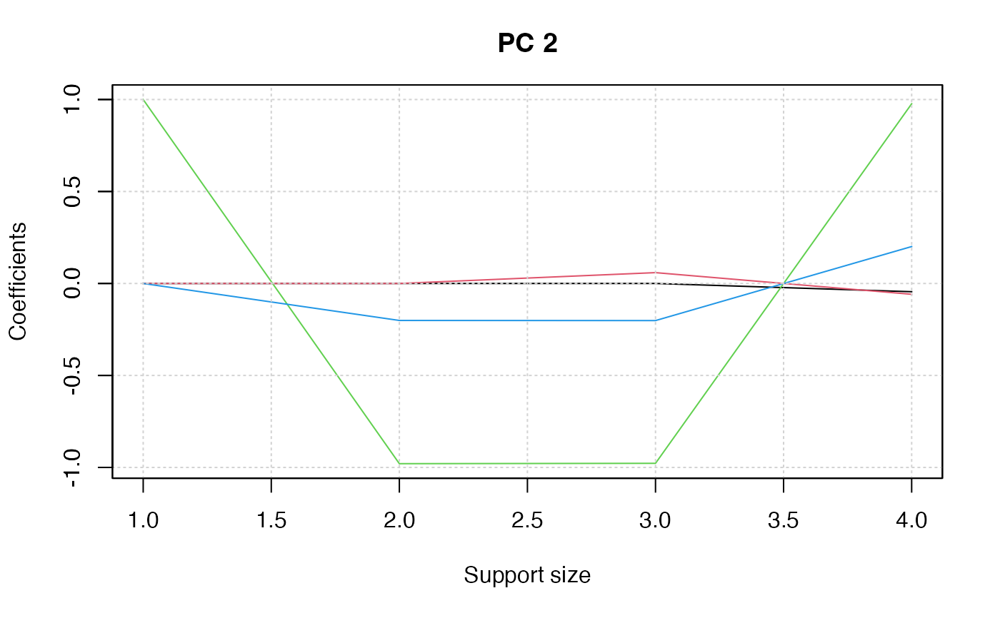
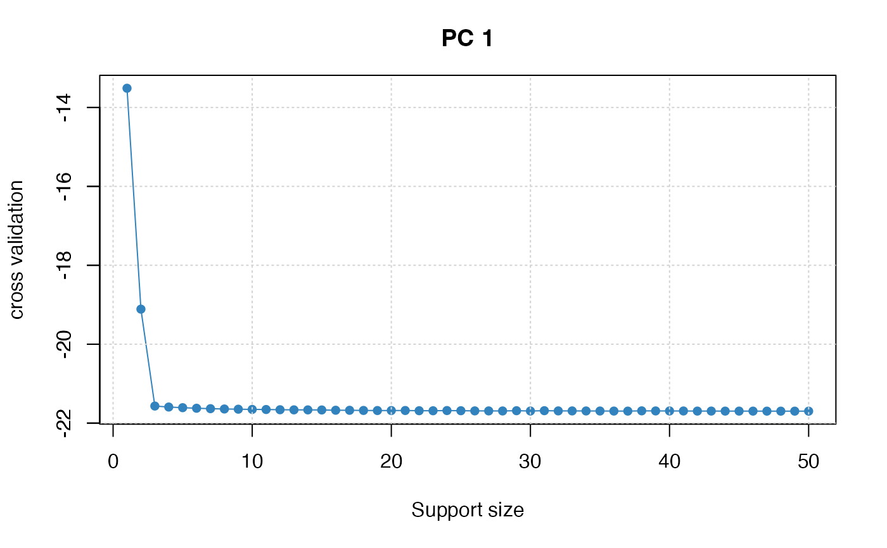

Adaptive best subset selection for principal component analysis
abesspca(
x,
type = c("predictor", "gram"),
sparse.type = c("fpc", "kpc"),
cor = FALSE,
support.size = NULL,
kpc.num = ifelse(sparse.type == "fpc", 1, 2),
tune.type = c("gic", "aic", "bic", "ebic", "cv"),
nfolds = 5,
foldid = NULL,
ic.scale = 1,
c.max = NULL,
always.include = NULL,
group.index = NULL,
splicing.type = 1,
max.splicing.iter = 20,
warm.start = TRUE,
num.threads = 0,
...
)A matrix object. It can be either a predictor matrix
where each row is an observation and each column is a predictor or
a sample covariance/correlation matrix.
If x is a predictor matrix, it can be in sparse matrix format
(inherit from class "dgCMatrix" in package Matrix).
If type = "predictor", x is considered as the predictor matrix.
If type = "gram", x is considered as a sample covariance or correlation matrix.
If sparse.type = "fpc", then best subset selection performs on the first principal component;
If sparse.type = "kpc", then best subset selection would be sequentially performed on the first kpc.num number of principal components.
If kpc.num is supplied, the default is sparse.type = "kpc"; otherwise, is sparse.type = "fpc".
A logical value. If cor = TRUE, perform PCA on the correlation matrix;
otherwise, the covariance matrix.
This option is available only if type = "predictor".
Default: cor = FALSE.
It is a flexible input. If it is an integer vector.
It represents the support sizes to be considered for each principal component.
If it is a list object containing kpc.num number of integer vectors,
the i-th principal component consider the support size specified in the i-th element in the list.
The default is support.size = NULL, and some rules in details section are used to specify support.size.
A integer decide the number of principal components to be sequentially considered.
The type of criterion for choosing the support size.
Available options are "gic", "ebic", "bic", "aic" and "cv".
Default is "gic".
tune.type = "cv" is available only when type = "predictor".
The number of folds in cross-validation. Default is nfolds = 5.
an optional integer vector of values between 1, ..., nfolds identifying what fold each observation is in.
The default foldid = NULL would generate a random foldid.
A non-negative value used for multiplying the penalty term
in information criterion. Default: ic.scale = 1.
an integer splicing size. The default of c.max is the maximum of 2 and max(support.size) / 2.
An integer vector containing the indexes of variables that should always be included in the model.
A vector of integers indicating the which group each variable is in.
For variables in the same group, they should be located in adjacent columns of x
and their corresponding index in group.index should be the same.
Denote the first group as 1, the second 2, etc.
If you do not fit a model with a group structure,
please set group.index = NULL (the default).
Optional type for splicing.
If splicing.type = 1, the number of variables to be spliced is
c.max, ..., 1; if splicing.type = 2,
the number of variables to be spliced is c.max, c.max/2, ..., 1.
Default: splicing.type = 1.
The maximum number of performing splicing algorithm.
In most of the case, only a few times of splicing iteration can guarantee the convergence.
Default is max.splicing.iter = 20.
Whether to use the last solution as a warm start. Default is warm.start = TRUE.
An integer decide the number of threads to be
concurrently used for cross-validation (i.e., tune.type = "cv").
If num.threads = 0, then all of available cores will be used.
Default: num.threads = 0.
further arguments to be passed to or from methods.
A S3 abesspca class object, which is a list with the following components:
A \(p\)-by-length(support.size) loading matrix of sparse principal components (PC),
where each row is a variable and each column is a support size;
The number of variables.
The same as input.
The actual support.size values used. Note that it is not necessary the same as the input if the later have non-integer values or duplicated values.
A vector with size length(support.size). It records the explained variance at each support size.
A value of tuning criterion of length length(support.size).
The number of principal component being considered.
The variance of principal components obtained by performing standard PCA.
Cumulative sums of var.pc.
If sparse.type = "fpc",
it is the total standard deviations of all principal components.
Cumulative sums of explained variance.
A vector with the same length as ev. It records the percent of explained variance (compared to var.all) at each support size.
It records the percent of explained variance (compared to var.pc) at each support size.
The original call to abess.
It is worthy to note that, if sparse.type == "kpc", the ev, tune.value, pev and pev.pc in list are list objects.
Adaptive best subset selection for principal component analysis (abessPCA) aim
to solve the non-convex optimization problem:
$$-\arg\min_{v} v^\top \Sigma v, s.t.\quad v^\top v=1, \|v\|_0 \leq s, $$
where \(s\) is support size.
Here, \(\Sigma\) is covariance matrix, i.e.,
$$\Sigma = \frac{1}{n} X^{\top} X.$$
A generic splicing technique is implemented to
solve this problem.
By exploiting the warm-start initialization, the non-convex optimization
problem at different support size (specified by support.size)
can be efficiently solved.
The abessPCA can be conduct sequentially for each component.
Please see the multiple principal components Section on the webite
for more details about this function.
For abesspca function, the arguments kpc.num control the number of components to be consider.
When sparse.type = "fpc" but support.size is not supplied,
it is set as support.size = 1:min(ncol(x), 100) if group.index = NULL;
otherwise, support.size = 1:min(length(unique(group.index)), 100).
When sparse.type = "kpc" but support.size is not supplied,
then for 20\
it is set as min(ncol(x), 100) if group.index = NULL;
otherwise, min(length(unique(group.index)), 100).
Some parameters not described in the Details Section is explained in the document for abess
because the meaning of these parameters are very similar.
A polynomial algorithm for best-subset selection problem. Junxian Zhu, Canhong Wen, Jin Zhu, Heping Zhang, Xueqin Wang. Proceedings of the National Academy of Sciences Dec 2020, 117 (52) 33117-33123; doi: 10.1073/pnas.2014241117
Sparse principal component analysis. Hui Zou, Hastie Trevor, and Tibshirani Robert. Journal of computational and graphical statistics 15.2 (2006): 265-286. doi: 10.1198/106186006X113430
# \donttest{
library(abess)
## predictor matrix input:
head(USArrests)
#> Murder Assault UrbanPop Rape
#> Alabama 13.2 236 58 21.2
#> Alaska 10.0 263 48 44.5
#> Arizona 8.1 294 80 31.0
#> Arkansas 8.8 190 50 19.5
#> California 9.0 276 91 40.6
#> Colorado 7.9 204 78 38.7
pca_fit <- abesspca(USArrests)
pca_fit
#> Call:
#> abesspca(x = USArrests)
#>
#> PC support.size ev pev
#> 1 1 1 6806.262 0.9564520
#> 2 1 2 6844.578 0.9618364
#> 3 1 3 6858.954 0.9638565
#> 4 1 4 6870.893 0.9655342
plot(pca_fit)

## covariance matrix input:
cov_mat <- stats::cov(USArrests) * (nrow(USArrests) - 1) / nrow(USArrests)
pca_fit <- abesspca(cov_mat, type = "gram")
pca_fit
#> Call:
#> abesspca(x = cov_mat, type = "gram")
#>
#> PC support.size ev pev
#> 1 1 1 6806.262 0.9564520
#> 2 1 2 6844.578 0.9618364
#> 3 1 3 6858.954 0.9638565
#> 4 1 4 6870.893 0.9655342
## robust covariance matrix input:
rob_cov <- MASS::cov.rob(USArrests)[["cov"]]
rob_cov <- (rob_cov + t(rob_cov)) / 2
pca_fit <- abesspca(rob_cov, type = "gram")
pca_fit
#> Call:
#> abesspca(x = rob_cov, type = "gram")
#>
#> PC support.size ev pev
#> 1 1 1 6583.765 0.9596660
#> 2 1 2 6623.819 0.9655043
#> 3 1 3 6662.804 0.9711869
#> 4 1 4 6673.559 0.9727545
## K-component principal component analysis
pca_fit <- abesspca(USArrests,
sparse.type = "kpc",
support.size = 1:4
)
coef(pca_fit)
#> [[1]]
#> 4 x 4 sparse Matrix of class "dgCMatrix"
#> 1 2 3 4
#> Murder . . . -0.04170432
#> Assault 1 -0.99717739 -0.99608572 -0.99522128
#> UrbanPop . . -0.04643219 -0.04633575
#> Rape . -0.07508168 -0.07521497 -0.07515550
#>
#> [[2]]
#> 4 x 4 sparse Matrix of class "dgCMatrix"
#> 1 2 3 4
#> Murder . . . -0.04482166
#> Assault . . 0.05893033 -0.05876003
#> UrbanPop 1 -0.9795841 -0.97767271 0.97685748
#> Rape . -0.2010350 -0.20170097 0.20071807
#>
plot(pca_fit)

plot(pca_fit, "coef")


## select support size via cross-validation ##
n <- 500
p <- 50
support_size <- 3
dataset <- generate.spc.matrix(n, p, support_size, snr = 20)
spca_fit <- abesspca(dataset[["x"]], tune.type = "cv", nfolds = 5)
plot(spca_fit, type = "tune")

# }